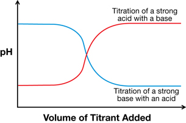

Module 8—Acid-Base Equilibrium
Lesson 6—pH Curves

 Get Focused
Get Focused
In Chemistry 20 you completed a titration experiment that involved the stepwise addition of one reactant to another until an endpoint was reached. Another way to set up this experiment would have been to record the change in pH as titrant was added to the test solution. The graph of the data is a pH curve.

In this lesson you will revisit this graph and learn more about its unique shape, including how the shape is influenced by equilibrium. You will also learn about acidic and basic substances that can react multiple times and how their equilibrium influences the shape of a pH curve.
Consider the following questions as you complete Lesson 6:
- What information about acids and bases and their equilibrium is contained on a titration curve?
- What events occur in the reaction of polyprotic acids and bases?
 Module 8: Lesson 6 Assignment
Module 8: Lesson 6 Assignment
As part of your lesson assignment, you will sketch a pH curve. Download a copy of the Module 8: Lesson 6 Assignment to your computer. You will receive further instructions on how to complete this assignment later in the lesson.
You must decide what to do with the questions that are not marked by the teacher.
Remember that these questions provide you with the practice and feedback that you need to successfully complete this course. You should respond to all the questions and place those answers in your course folder.